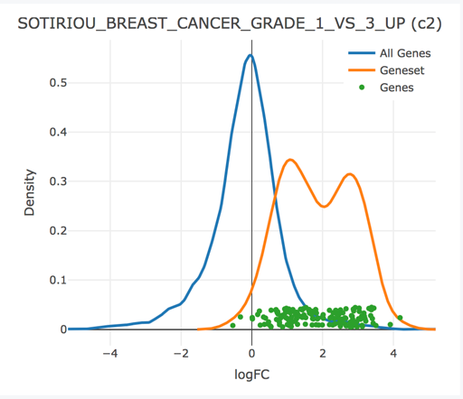
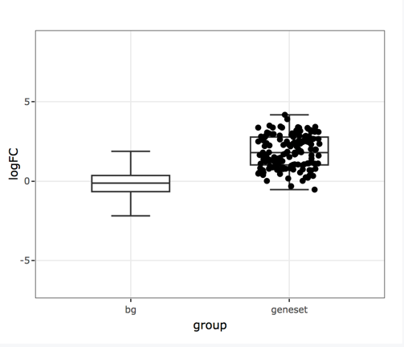

The multiGSEA package was built to facilitate the use of gene sets in the analysis of high throughput genomics data (primarily RNA-seq). Analysts can orchestrate any number of GSEA methods across a specific contrast using the unified interface provided by the multiGSEA function, and a shiny application is provided that facilitates the exploration and interpretation of GSEA results.
- The
multiGSEAfunction is a wrapper that orchestrates the execution of any number of user-specified gene set enrichment analyses (GSEA) over a particular experimental contrast of interest. This will create aMultiGSEAResultobject which stores the results of each GSEA method internally, allowing for easy query and retrieval. - A sister
multiGSEA.shinypackage provides anexplorefunction, which is invoked onMultiGSEAREsultobjects returned from a call tomultiGSEA. The shiny application facilitates interactive exploration of these GSEA results. This application can also be deployed to a shiny server and can be initialized by uploading a serializedMultiGSEAResult*.rdsfile.
Full details that outline the use of this software package is provided in the package’s vignette, however a brief description is outlined below.
Usage
A subset of the RNA-seq data tumor/normal samples in the BRCA indication from the TCGA are provided in this package. We will use that data to perform a “camera” and “fry” gene set enrichment analysis of tumor vs normal samples using the MSigDB hallmark and c2 gene set collections with multiGSEA.
library(multiGSEA) library(dplyr) gdb <- getMSigGeneSetDb(c('H', 'C2'), species = 'human', id.type = "entrez") vm <- exampleExpressionSet(dataset = 'tumor-vs-normal', do.voom = TRUE) mg <- multiGSEA(gdb, vm, vm$design, "tumor", methods=c("camera", "fry"))
We can view the top “camera” results with the smallest pvalues like so:
results(mg, "camera") %>% arrange(pval) %>% select(collection, name, padj) %>% head #> collection name padj #> 1 C2 SOTIRIOU_BREAST_CANCER_GRADE_1_VS_3_UP 1.037263e-36 #> 2 C2 ROSTY_CERVICAL_CANCER_PROLIFERATION_CLUSTER 1.037263e-36 #> 3 C2 NAKAYAMA_SOFT_TISSUE_TUMORS_PCA2_DN 1.718472e-23 #> 4 C2 KANG_DOXORUBICIN_RESISTANCE_UP 1.203816e-22 #> 5 C2 CROONQUIST_IL6_DEPRIVATION_DN 2.486087e-22 #> 6 C2 BENPORATH_PROLIFERATION 7.471399e-22
The shift in expression of the genes within the top gene set can be visualized with the iplot function below. This plot produces interactive graphics, but rasterized versions are saved for use with this README file:
iplot(mg, 'c2', 'SOTIRIOU_BREAST_CANCER_GRADE_1_VS_3_UP', type = "density")

iplot(mg, 'c2', 'SOTIRIOU_BREAST_CANCER_GRADE_1_VS_3_UP', type = "boxplot")

When these plots are rendered in your workspace or an Rmarkdown document, the user can hover of the genes (dots) to see their name and differential expression statistics.
For an immersive, interactive way to explore the GSEA results, use the multiGSEA.shiny::explore(mg) method!
Installation
The multiGSEA suite of packages will soon be submitted to bioconductor and installable via the recommended BiocManager::install() mechanism. In the meantime, install this package multiGSEA.shiny@develop branch from github, which sould install both multiGSEA.shiny and multiGSEA packages.
# install.packages("BiocManager") BiocManager::install("lianos/multiGSEA.shiny@develop")